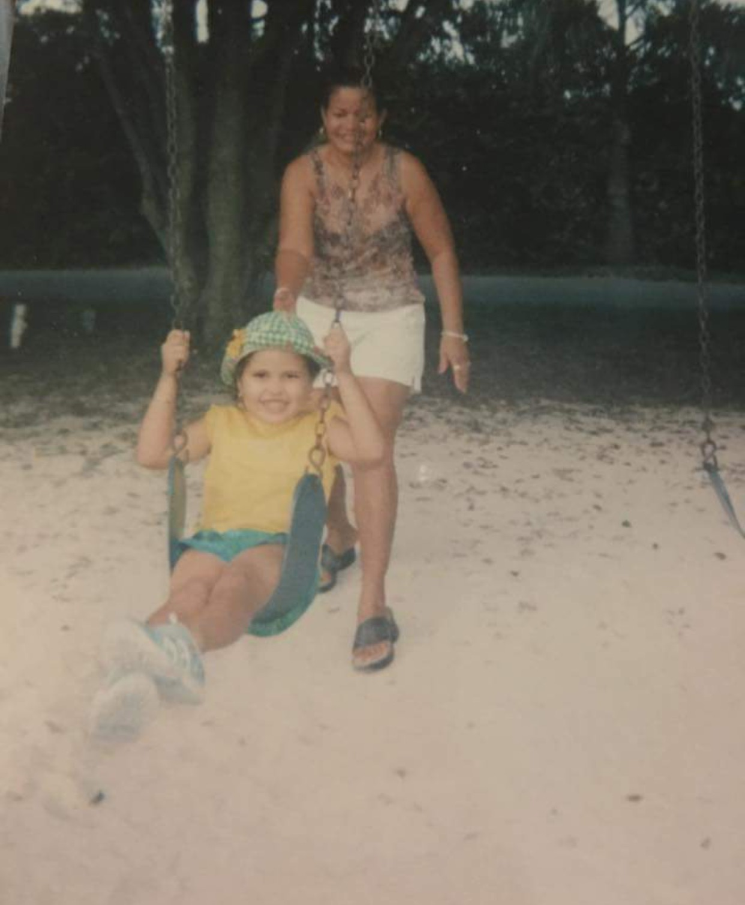

It’s been a long time since I’ve had someone
to hold me, comfort me, go out, and have some fun
I’ve had my things, had my flings, but all them temporary
Though I’m young I crave a love that’s complete
Chorus:
Honey, I’m begging you to please fall in love with me
promise me that you won’t ever, ever for get me
I want to hear your favorite songs in a playlist
made just for me to listen to straight on repeat
but you only so recognize me
late at night when the moon has peaked
I’ve been thinking about you since the minute we met
Known you for 689 days can you do the math
I can write infinite pages about my love for you
for you there’s no limit on the amount of things I’d do
(chorus)
Bridge:
I have lost my sense of pride
trust me, that I can’t deny
thinking about you
every minute of everyday
but what can i say
(chorus)
Tell me how to feel when I’m alone
teach me my way out of this deep hole
cause I’m here without you in this broken road
that leads me down the memories
and has me trapped with broken wings
while these thoughts of you keep haunting me
Chorus:
On those nights, on those nights
I just need to feel alright
How can I get through these thoughts of you
See your eyes in the stars, see your smile in the sky
Oh you pull me in just like the moon
I’m running out of things to do to get over you
Tell me how to feel when I’m a mess
what’s the way to end this loneliness?
all those times with you I felt so blessed
Now you’re gone.. who would’ve guessed
that someone who claimed to love so deep
would make these tears run down my cheek
while these thoughts of you keep haunting me
(chorus)
Bridge:
On those nights
I can’t help but replay all the tears
On those nights
I can’t help but remember the days you were here
On those nights
all I can think of is holding you tight
in my arms.. for the rest of the night
but you’re gone, yeah you lied
and now I’m here lonely every damn night.
ohh.. on those nights
(chorus)
Beautiful man, I’m your number 1 fan
If only you knew how you make this girl dance
From your dark brown hair, to that mysterious stare
From the beat of your heart, to the love that you share
That everlasting smile could never go out of style
Beautiful man, loved you for quite a while
Chrous:
You’re way too mesmerizing
This may be a bit surprising
But you’ve been my creative inspiration
Beauiful man, beautiful man
A truly amzing, beautiful man
Beautiful man, I’m your number 1 fan
If only you knew how you help me understand
All the meaning and the beauty of life
The difference between wrong and right
Your willingness to help and strong sense of self
A true inspiration, a wonderful creation
Beautiful man, loved you for quite a while
(chorus)
Bridge:
You’re everything I’ve wanted and more
A man I truly adore
And any girl in the world
would be lucky to be.. yours
beautiful man
(chorus)
Chorus:
why do I always let them mess with my heart
my heart, my heart
why do I always let them rip me apart
apart, apart
and once that they’re gone, I’m never me again
they really just don’t see how bad I’m suffering
how could I possibly let them do this to me
I do this constantly but always fail to see
their true intentions the way they toy with me
like they are kids again and I’m their barbie
but I’m too blind to see that they’re not my Ken
and they will never step up and be real men
(chorus)
they don’t seem to care, they’re bunch of conmen
ready to trick my mind to get me involved with them
but I’m so over them, need me a handyman
one that’ll fix my heart, one that’ll take a stand
tired of feeling nothing but broken
after kiss, every hug
every time I think I fall in love
(chorus)
Bridge:
my heart may never be the same
after each one of their games
day by day ripped into more pieces
and the level of disappointment increases
now the love left to share decreases
(chorus)
many people tend to let go of the ones they love
feelings aside, putting their love’s happiness above
many people only want the best for their other half
leaving them with nothing but a photograph
but darling please know that I’m not one of them
I guess once I fell for you I became thoughtless
Chorus:
So call me selfish
But I wouldn’t want to see you love anybody else
Because I love you and I want you all for myself
Don’t you know that I would give you the world
All the things I’d do to be your one and only girl
So call me selfish
But I wouldn’t want to see the day you leave this city
Because I love you and I don’t want you to leave me
Don’t you know that for you I would travel the world
All the roads I’d take to be your one and only girl
So call me selfish, yeah call me selfish
sometimes I sit and think how much you mean to me
I’ve got it real bad for you, that I guarantee
want to make you smile, I just want to make you happy
I want to be the only one that can make you feel complete
Oh I know of a word for people like me, it’s egocentric
but how can I not be when a love this good makes me oh so selfish
(chorus)
Bridge: Your love has made me crazy
Your love has made me greedy
Your love has made me messy
Your love has made me needy
So call me selfish
Call me selfish
Call me… selfish
(chorus)
Misunderstood are these thoughts I have
Man, can you explain these feelings
Knowing this is love that can’t happen
Knowing this is love that just can’t be
if only i could express my every thought
if only this was a love, a love that’s not wrong
(chorus)
For the most misunderstood love of all is forbidden
when all you feel has to be put away and hidden
Oh I know, I know you wouldn’t understand
But I never expected these feelings to expand
Misunderstoon when I watch you speak
Man, can you explain these fast heartbeats
Knowing I can’t just look into eyes
Knowing you’re not one I can go to when I cry
If only I could express how you move my word
If only I could tell you that you are my world
(chorus)
Bridge:
Misunderstood are the words of a girl
A girl who may never be able to confess
Who may beat around the bush, but not express
A love that causes the most distress
For the love she has for him is forbidden
(chorus)
no disrespect but I must admit
you ruined my life in an instant
unknowingly I fell for you
I should’ve, I should’ve been more distant
June 18th I remember
when I decided I surrender
thought maybe I’d found the one for me
flashed by your smile in a bowling alley
while first impressions are quite deciving
something bout you is just so appeasing
chorus:
we’re not together but we act like we are
but the rush is amazing so far
baby I wonder baby I wonder
what things would be like
if this was love
if this was love
if this was love
love, love
fine line between love and hate it’s true
and I don’t know from which of the two to choose
June 30 I remember
the day felt colder than December
birthday dinner you didn’t show up to
I only wanted to spend that day with you
and while you broke the promise to be there next to me
still managed to forgive your unreliability
(chorus)
Bridge:
6 months going on and I’m still nothing to you
you say you’re human and that you’ve got a heart too
but darlin I can tell you why I don’t think that’s true
(chorus)
Dating back and forth to fill that empty space
Been feeling incomplete since I first saw your face
Now I always feel the need to go out of my way
To find someone, who might actually stay
Texting back and forth, but there’s still that empty space
No one’s really serious, this is a lousy game to play
Because I’m only into 1 and that one is you
But you’ve got someone that you’ve got to be true to
Chorus:
Since I’ve met you, nobody compares
Having trouble finding someone who cares
It’s like you’ve left me with an empty space
I’ve got to find the one who can take your place
Dating back and forth to fill that empty space
Been feeling incomplete since I first saw your face
I’ve got nothing but high expectations for love
Cuz you treat her like a queen and that’s all I can think of
Chatting back and forth but am I even into him
I don’t even think that he is ready to commit
But I’m just spending time with every other guy
To see which one could make me feel almost alive
(chorus)
Bridge:
Like damn, did I really think I could pull this off
To ignore my love for you and replace you like a glove
But I don’t think someone can fill an empty space
That wasn’t meant to be filled by them anyway
So I’ll go ahead and fill it with love for myself
Because it’s what I deserve, not to be put on a shelf
Chorus #2:
Since I’ve met me, nobody compares
I’ve realized there’s nothing better than selfcare
And now that empty feeling, I no longer wear
I found a love greater than any, of that I am aware
x 2
you call me to tell me how much you miss me
2am phone calls because you can’t sleep
it hurts you to see him treat me like a queen
he picked up my pieces, now he makes me feel happy
my relationship with him, you should not speak of
because when you had me you never valued my love
now you can’t help but think that
Chorus:
it could’ve been you
it could’ve been you
it could’ve been, it could’ve been
it could’ve been you
it could’ve been you all along, you by my side
you til the day I die
it could’ve been, it could’ve been
it could’ve been you
he makes me feel special and all warm inside
all you knew how to do was make me cry
but those tears are now dry, never felt more alive
side by side, I’ll love him til earth no longer has life
so hang up the phone, don’t call me again
if I remember clearly, you didn’t want to be friends
you don’t know how to live with yourself knowing that
(chorus)
Bridge:
you can’t just come back with my heart already fixed
sorry you took so long to realize what you missed
but darlin, I’m already his I’m already his
you lost your chance, no more going back to this
just know that
(chorus)
My oh my, I guess I should thank you
For making me feel so brand new
My thoughts on love have changed
You’ve given me a whole different view
This is all a whole new sensation
Causing my heart acceleration
Chorus:
And my, my world is shaken
My breath’s been taken
My body’s numb but I can still feel these butterflies
Butterflies
I’ve been feeling nothing but these butterflies
Butterflies
Been a while since I last felt these butterflies
My oh my, I guess you should know
I finally look forward to seeing tomorrow
I’m finally not scared of what my future holds
Because I know I won’t be diving in solo
You’ve got a place in me, and I a place in you
And for you there’s nothing that I wouldn’t do
(chorus)
Bridge:
It’s refreshing to know you’re by my side
The shy little girl no longer has to hide
So much confidence and so much pride
In knowing that you’ll forever be mine
(chorus)
Here we are, I’m crying
and you’re yelling
Once again arguing
over something so petty
You want to control
everything that I do
You think you have a say
in the choices I make
But darling, darling, darling
I think I’m running away
Chorus
These things happen
when you rush into something
for not wanting to be alone
and this no longer feels like home
Now I know it’s time to go
This love is everything I feared
Not even love, nowhere near
It’ll hurt, but I can’t stick around
Not when you keep me this stressed out
Here we are, I’m upset
you’re giving me that guilt trip
You say that I’m (the)
love of your life
but that’s not what I
felt last night
Everyday this just gets worse
It all just feels like some kind of curse
and darling, darling, darling
I think I’m running away
(chorus)
Bridge:
My apologies, but I must leave
This has sucked, all the life in me
I really hoped for the best
But now it’s time to give it a rest
(chorus)
Young girl raised so beautifully sweet
She’d tend to love a little too intensely
Blinded by her lovely sunrise
He refused to see past her shining light
Young boy raised with hardships
All he needed was companionship
But nothing too serious like a relationship
He failed to love her, he couldn’t commit
Here she realized she needed to cut the strings
Chorus:
When she learned to let go
She could see her potential
And that there’s no one more special
Than the person she can be
And now she can finally breath
because she is finally free
When she learned to let go
Young girl learning to spread her wings
Each day more educated on brand new things
She was a smart one, he says
Now he regrets ever letting her walk away
Young boy learning from his mistakes
He didn’t realize how good she was for him
Only she could see his light, though it was dim
She refuses to look back, no returning to him
Here she realized it was good to have cut the strings
(chorus)
Bridge:
All he did was hurt her
He didn’t love her
All he did was make her cry
So she needed to say goodbye
He didn’t see her worth
Now he’s missing her
(chorus)
This is a song a wrote about the day that I was told that I was cancer free.

It was the year 2004 on April 23
The day that ended all the suffering
No more waiting around
Goodbye hospital gowns
Say hello to playgrounds
I’m free to be a child
I’m free, cancer free
I’m free, finally
I’m free, cancer free
I’m free, finally
I’ll no longer deal with bullies
I won’t have to hide in hoodies
My hair will grow back
I’ll no longer be sad
I’m a brand new girl
Ready for the world
(chorus)
Even on my darkest days I chose to find the light
I knew I couldn’t give, had to put up a fight
I’m more than ready to live an amazingly free life
(chorus)
I know this isn’t right, I know this won’t work
Can see straight through your lies, see it in your smirk
I just can’t keep putting up with all this hurt
done nothing but fill my eyes with dirt
Pre Chorus:
All I ask myself
All I ask myself
All I ask myself
Chorus:
W-w-what am I doing anyway
I know it’s time, time to walk away
A And you keep begging, begging me to stay
W-w-what am I doing anyway
Don’t want to hear it, what you say
Just stop begging, begging me to stay
W-w-what am I doing anyway
Everyday is a hassle, all we do is argue
You say you love me, but I doubt that’s true
And I can’t feel it, what I once felt for you
Now we’re spinning, you’re the sun I’m the moon
(pre-chorus)
(chorus)
Bridge:
Hurts to leave the one I thought would be mine forever
Kept trying to make it work, tried to make it better
But now nothing can save us, this day’s too bitter
No matter how hard you try, just can’t change someone
This goes for you, goes for me
We’ll learn from this, learn our lesson finally
(pre-chorus)
(chorus)
The song below is something that I wrote for my boyfriend.It’s called Pi Day because it is the day of our anniversary.
Chorus:
From lighitng my kicthen up on fire
To watching the sunrise in my car
You’ve made your way into my heart
You’ve made your way into my heart
X 2
Knew you’d be the one I’d marry, marry
From the moment we met in February
Every moment with you is extraordinary
On our first date dinner I dropped a knife
We’ll laugh at that for the rest of my life
It’s the little things that make us who we are
You’re a wish come true off a shooting star
You’re a wish come true off a shooting star
(chorus) X2
I love you with all that’s in my heart
I love you, always have, right from the start
Never thought I’d find someoneso soon
Now my 2ams are better than my noons
There’s no better feeling than waking up to you
Babe I’ve never had a love, a love so good
(chorus) X2